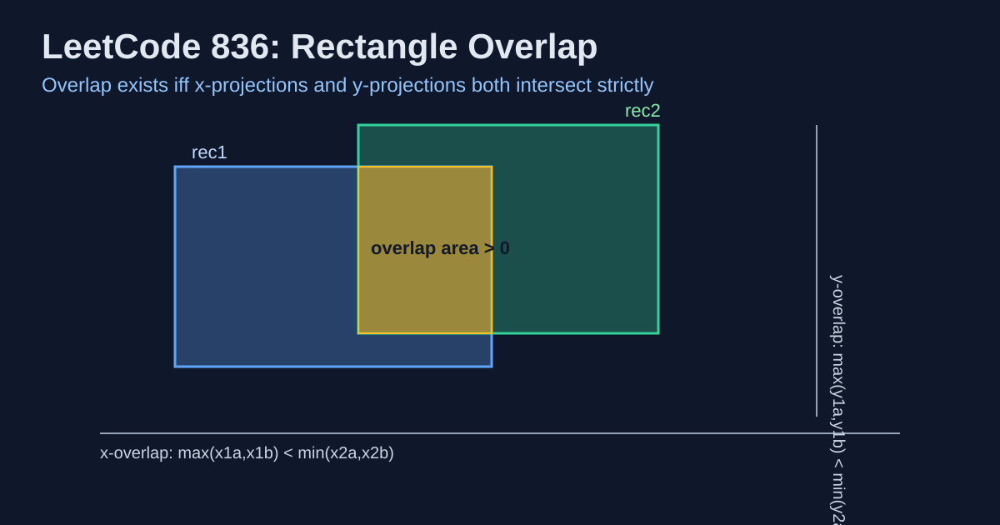

LeetCode 836: Rectangle Overlap (Axis Projection Intersection)
LeetCode 836GeometryMathToday we solve LeetCode 836 - Rectangle Overlap.
Source: https://leetcode.com/problems/rectangle-overlap/

English
Problem Summary
Given two axis-aligned rectangles rec1 and rec2 in format [x1, y1, x2, y2], return whether they have a strictly positive overlap area.
Key Insight
Two rectangles overlap in area iff their projections overlap on both axes with strict inequality. Touching only on edge/corner is not overlap area.
Algorithm
- X-axis overlap: max(x1a, x1b) < min(x2a, x2b).
- Y-axis overlap: max(y1a, y1b) < min(y2a, y2b).
- Return true only if both are true.
Complexity Analysis
Time: O(1).
Space: O(1).
Common Pitfalls
- Using <= instead of <, which incorrectly treats edge-touching as overlap.
- Over-complicating with area formulas when axis checks are enough.
Reference Implementations (Java / Go / C++ / Python / JavaScript)
class Solution {
public boolean isRectangleOverlap(int[] rec1, int[] rec2) {
return Math.max(rec1[0], rec2[0]) < Math.min(rec1[2], rec2[2])
&& Math.max(rec1[1], rec2[1]) < Math.min(rec1[3], rec2[3]);
}
}func isRectangleOverlap(rec1 []int, rec2 []int) bool {
maxX1 := max(rec1[0], rec2[0])
minX2 := min(rec1[2], rec2[2])
maxY1 := max(rec1[1], rec2[1])
minY2 := min(rec1[3], rec2[3])
return maxX1 < minX2 && maxY1 < minY2
}
func max(a, b int) int {
if a > b {
return a
}
return b
}
func min(a, b int) int {
if a < b {
return a
}
return b
}#include <vector>
#include <algorithm>
using namespace std;
class Solution {
public:
bool isRectangleOverlap(vector<int>& rec1, vector<int>& rec2) {
return max(rec1[0], rec2[0]) < min(rec1[2], rec2[2])
&& max(rec1[1], rec2[1]) < min(rec1[3], rec2[3]);
}
};from typing import List
class Solution:
def isRectangleOverlap(self, rec1: List[int], rec2: List[int]) -> bool:
return (max(rec1[0], rec2[0]) < min(rec1[2], rec2[2]) and
max(rec1[1], rec2[1]) < min(rec1[3], rec2[3]))var isRectangleOverlap = function(rec1, rec2) {
const maxX1 = Math.max(rec1[0], rec2[0]);
const minX2 = Math.min(rec1[2], rec2[2]);
const maxY1 = Math.max(rec1[1], rec2[1]);
const minY2 = Math.min(rec1[3], rec2[3]);
return maxX1 < minX2 && maxY1 < minY2;
};中文
题目概述
给定两个与坐标轴平行的矩形 rec1、rec2（格式为 [x1, y1, x2, y2]），判断它们是否存在严格大于 0 的重叠面积。
核心思路
矩形有面积重叠，当且仅当它们在 x 轴投影和 y 轴投影都严格相交。若只在边或角接触，面积为 0，不算重叠。
算法步骤
- x 轴投影严格相交条件：max(x1a, x1b) < min(x2a, x2b)。
- y 轴投影严格相交条件：max(y1a, y1b) < min(y2a, y2b)。
- 两者同时成立才返回 true。
复杂度分析
时间复杂度：O(1)。
空间复杂度：O(1)。
常见陷阱
- 把严格不等式写成 <=，会把“仅贴边”误判为重叠。
- 过度使用面积公式；本题直接做轴投影判断更直接可靠。
多语言参考实现（Java / Go / C++ / Python / JavaScript）
class Solution {
public boolean isRectangleOverlap(int[] rec1, int[] rec2) {
return Math.max(rec1[0], rec2[0]) < Math.min(rec1[2], rec2[2])
&& Math.max(rec1[1], rec2[1]) < Math.min(rec1[3], rec2[3]);
}
}func isRectangleOverlap(rec1 []int, rec2 []int) bool {
maxX1 := max(rec1[0], rec2[0])
minX2 := min(rec1[2], rec2[2])
maxY1 := max(rec1[1], rec2[1])
minY2 := min(rec1[3], rec2[3])
return maxX1 < minX2 && maxY1 < minY2
}
func max(a, b int) int {
if a > b {
return a
}
return b
}
func min(a, b int) int {
if a < b {
return a
}
return b
}#include <vector>
#include <algorithm>
using namespace std;
class Solution {
public:
bool isRectangleOverlap(vector<int>& rec1, vector<int>& rec2) {
return max(rec1[0], rec2[0]) < min(rec1[2], rec2[2])
&& max(rec1[1], rec2[1]) < min(rec1[3], rec2[3]);
}
};from typing import List
class Solution:
def isRectangleOverlap(self, rec1: List[int], rec2: List[int]) -> bool:
return (max(rec1[0], rec2[0]) < min(rec1[2], rec2[2]) and
max(rec1[1], rec2[1]) < min(rec1[3], rec2[3]))var isRectangleOverlap = function(rec1, rec2) {
const maxX1 = Math.max(rec1[0], rec2[0]);
const minX2 = Math.min(rec1[2], rec2[2]);
const maxY1 = Math.max(rec1[1], rec2[1]);
const minY2 = Math.min(rec1[3], rec2[3]);
return maxX1 < minX2 && maxY1 < minY2;
};
Comments